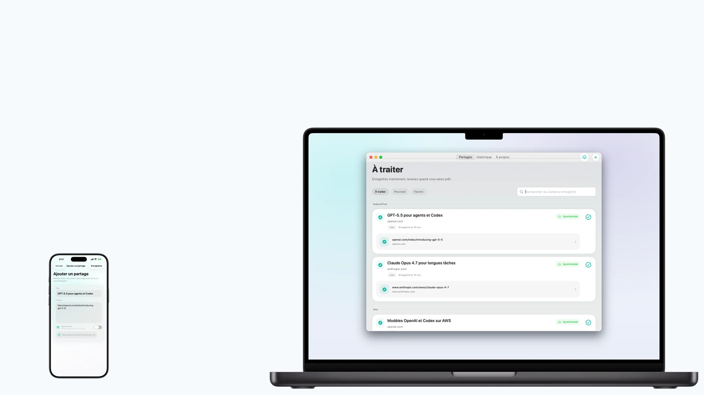
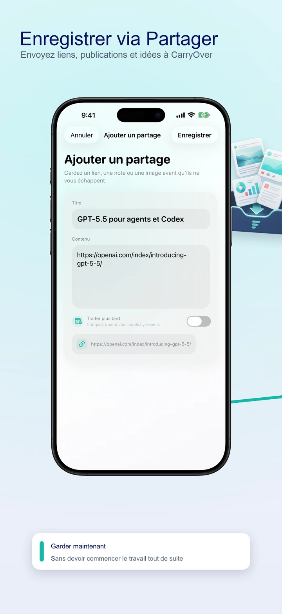
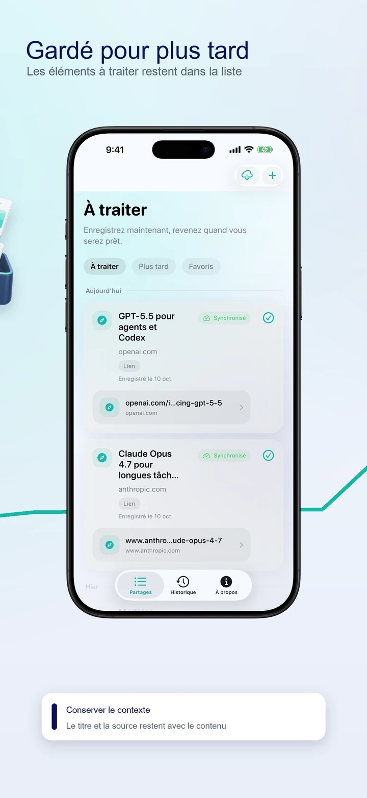
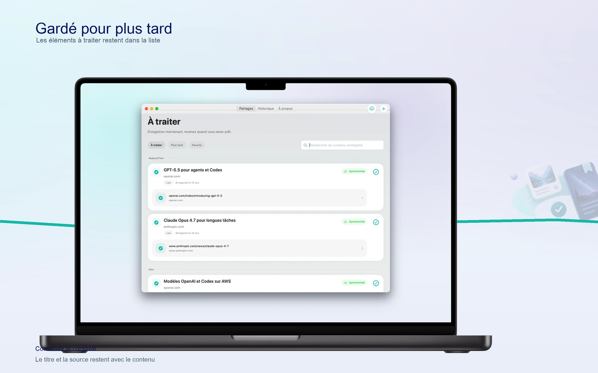

Feuille de partage système
Enregistrez du texte et des liens depuis Safari, Notes, les apps sociales et toute app compatible avec le partage.

Enregistrez maintenant, revenez plus tard
Enregistrez depuis le menu Partager du téléphone. Ouvrez la source sur Mac quand vous êtes prêt.

Envoyez liens, publications et idées à CarryOver

Les éléments à traiter restent dans la liste

Ouvrez la source, puis marquez comme terminé
Enregistrez du texte et des liens depuis Safari, Notes, les apps sociales et toute app compatible avec le partage.
CarryOver repère les URL dans le texte partagé et conserve le contexte d'origine.
Les éléments enregistrés se synchronisent via CloudKit pour garder iPhone, iPad et Mac alignés.
Les éléments à traiter restent dans la liste
Ouvrez la source, puis marquez comme terminé
Les éléments terminés restent dans l’historique